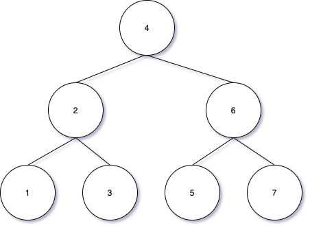

Notes of Week 8
Table of Contents
1 Binary Search Tree (BST)
1.1 BST Property
- Based on the binary tree
- Every node has a value
- Every node value is greater than or equal to the values of all nodes in its left subtree; less than or equal to the values of all nodes in its right subtree
1.2 Searching a BST
Suppose we want know whether value v exists in a BST, we compare v to the value r at the root
- if v = r, the value is found and finished
- if v < r, repeat searching down the left subtree
- if v > r, repeat searching down the right subtree
1.3 BST Insertion
To insert v, we compare v to the value r at the root
- if v = r, then we proceed down the tree of our choice
- if v < r, repeating searching down the left subtree
- if v > r, repeating searching down the right subtree
- once go off the tree, that's where the new node goes
1.4 Deleting a Node
1.4.1 Deleting a Node is Leaf
To delete a leaf, just remove it
1.4.2 Deleting a Node has One Child
To delete a node with a single child, cut out that node
1.4.3 Deleting a Node has Two Children
To delete a node with two children, replace it by its predecessor
- The predecessor of a node n with two children is the maximum node found in the left subtree of n.
1.5 Height of a BST
- The efficiency of search depends on the height of the BST
- If a "tree" is actully a chain, then searching it is no more efficient than a linear search
1.6 Minimum-Height BST
 No other BST of 7 nodes can have less height.
1.7 Maximum Nodes per Height
| Tree Height | Max Nodes |
|---|---|
| 1 | 1 |
| 2 | 3 |
| 3 | 7 |
| 4 | 15 |
| 5 | 31 |
A binary tree of height h with n nodes satisfies \(n \le 2^h-1\)
1.7.1 Proof of Maximum Nodes
Base case: when \(h = 1\), we have at most 1 node, and \(1 \le 2^1-1 = 1\) Inductive step: \(h > 1\) left: \(l \le 2^{h-1} - 1\) right: \(r \le 2^{h-1} - 1\) Adding 1 for the root, we have \(n=l+r+1 \le 2^h - 1\)
1.7.2 Runtime Complexity
\(O(log(n))\)